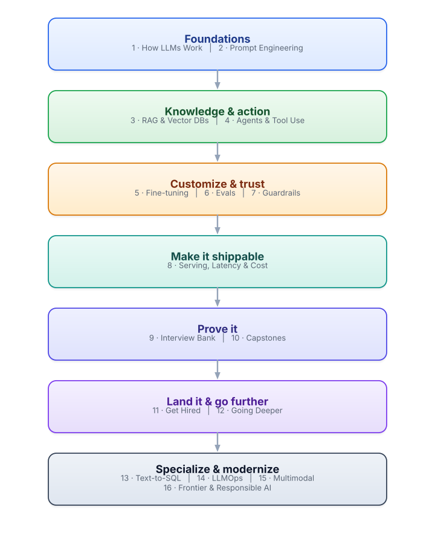
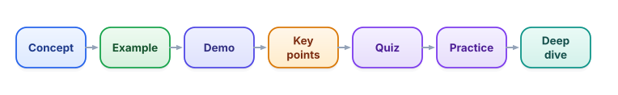

How to use this course
Two minutes of orientation that will make every lesson after this one land harder. Read it once, then never worry about “am I doing this right?” again.
Why this course exists
There has never been a better time to build software that thinks in language. A single person with a laptop can now build a research assistant, a customer-support agent, or a tool that reads a thousand contracts before lunch. The thing standing between “I’ve heard of ChatGPT” and “I shipped a reliable AI product” is not talent or a fancy degree — it’s a clear path and the discipline to walk it.
That’s what this is. A path from zero to a job-ready applied generative-AI engineer — someone who can take a fuzzy idea (“make our docs answerable”) and turn it into something real, fast, and trustworthy. I’ll teach you the way the best mentors teach: motivation first (why does this thing exist, what problem does it kill), then the idea, then proof, then practice. No skipped steps. No vocabulary used before it’s defined.
After every lesson, ask yourself: “Could I explain this to a friend, and could I use it on the job?” If yes, you’ve got it. If not, the lesson isn’t finished with you yet — re-read the concept, redo the practice. That’s the whole standard. Everything in this course is built to get you to “yes.”
The shape of the journey
The course is sixteen tracks (think: chapters), and they’re deliberately ordered. Each one builds on the last, and nothing ever leans on something taught later. If you go top to bottom, every idea will arrive already prepared for. Here’s the whole arc in one picture:

You don’t need to memorize this map. You just need to trust it and start at the top. Every track is unlocked, but resist the urge to jump around — Tracks 1 and 2 are the foundation everything else stands on, and most people who “sort of know” LLMs are actually shaky here. Earn the early tracks and the later ones get much easier.
What every lesson gives you
Every lesson has the same shape, so you always know where you are and what to do next:

Here’s how to actually use each part — this matters more than it looks:
| Part | How to use it |
|---|---|
| Concept | Read it slowly. It starts with why the idea exists and defines every term the first time it appears. If a word feels undefined, it’s a bug — but it won’t happen. |
| Worked example | Don’t just read it — run it. Real prompts, real data. Typing it yourself is where the learning sticks. |
| Live demo | An interactive widget right in the page. Poke it. Change the inputs. Break it on purpose and watch what happens. |
| Key points | The few things worth memorizing. If you remember nothing else, remember these. |
| Quiz | Answer before you read the explanations. Getting one wrong and understanding why is worth more than getting it right by luck. |
| Practice | Try it yourself first; only then open the solution. The solution explains the reasoning, not just the answer. |
| Deep dive | Optional. For when you want to go past job-ready into genuinely-deep. Skip it on the first pass if you like. |
The five habits that make this work
I’ve watched a lot of people learn this material. The ones who become dangerous-in-a-good-way all do the same five things:
- Type the code yourself. Copy-paste teaches your clipboard, not your brain. Typing forces you to read every line.
- Predict before you run. Before hitting run, say out loud what you expect. When you’re wrong, you’ve found exactly the thing you didn’t understand.
- Do the practice before peeking. The struggle is the point. A solution you reached for after trying teaches ten times what a solution you read cold does.
- Explain it to someone (or a rubber duck). If you can’t say it simply, you don’t have it yet. This is the “could I explain this?” test in action.
- Go in order, and don’t rush. There’s no deadline here. Quality of understanding beats speed of completion, every single time.
You finish a lesson on tokens. You can recite the definition, but you couldn’t explain to a friend why token counts matter for cost. By this course’s standard, what should you do?
What's the single most effective way to use this course?
What you need (spoiler: almost nothing)
Right now, to read and learn, you need only this browser. The interactive demos run on this page with no setup.
When you start running real code (beginning in the next lesson), you’ll use Google Colab — a free coding notebook that runs in your browser, with nothing to install. The only thing you’ll need is a free Google account, which you very likely already have.
This course is built so it costs $0 to complete. No paid API keys, no subscriptions, no cloud bills. Every example runs either right here in the page, in free Google Colab, or on small open-source models you can run on your own machine. If a lesson ever seems to require payment, it’s a mistake — it won’t happen.
A few things work quietly in your favor as you go — all saved on your device, nothing to sign up for:
- Progress & resume — mark any lesson complete; the roadmap fills in and the home page’s Resume button jumps you to your next unfinished lesson.
- Revision — completed lessons are scheduled for spaced review (1 → 3 → 7 → 21 days) on the Review page; the header badge shows how many are due.
- Scratchpad — a free-form Python REPL you can run right in your browser, no install; find it at the top of the Labs page.
- Interactive labs — poke the tokenizer forge, retrieval toy, and text-to-SQL explorer built into the lessons.
- Themes — recolor the whole course with the palette dots in the header; pick the vibe that keeps you coming back.
- This is a path: go top to bottom, and nothing depends on something taught later.
- The standard for “done” is “could I explain this, and ship it?” — not “did I read it.”
- Every lesson has the same seven parts; the example, quiz, and practice are where the real learning happens.
- Type code yourself, predict before running, struggle before peeking.
- You need only a browser now, and a free Google account soon. It all runs for $0.
That’s the whole orientation. Next, let’s get your free toolkit set up so you can run real code — it takes about five minutes and costs nothing.